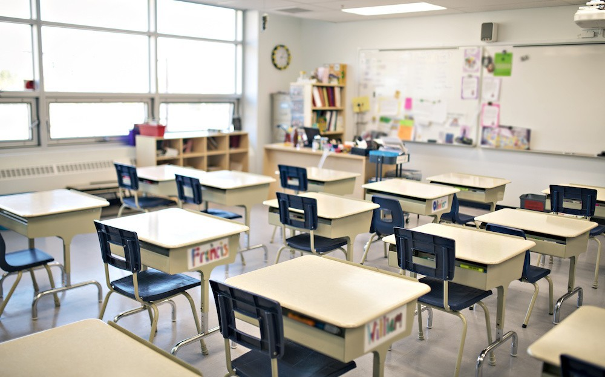

Videos
WORK
.jpeg)
Campus Life
We have many sports to choose from
We have lot's of sports to choose at campus, including basketball, soccer, badmitton, swimming, and more
-
Online learning in our class is very good and student oreinted.
Now class begins when her classmates' names appear online. She sits alone at the dining room table, barefoot and petting the family dog. It's her freshman year at St. Anthony High School, a private Catholic school in Milwaukee. She doesn't know what her classmates look like, because nobody ever turns on their cameras. After schools in Milwaukee went remote last March, Ruby and her friends in eighth grade at St. Anthony's middle school missed their graduation ceremonies and parties. Her close friends attended different high schools, mostly other private schools that offered in-person instruction. St. Anthony, like many schools in urban areas, including Milwaukee Public Schools, started the fall semester online amid the coronavirus pandemic. Virtual learning might be keeping Ruby, 14, and her family safer during a public health crisis. But it has made it exponentially harder for her to stay motivated and learn. Her online classes are lecture-heavy, repetitive and devoid of student conversation. Her grades have dropped from A's and B's to D's and F's. She stays up too late. She sleeps a lot. She misses her friends. Like millions of students attending school virtually this year, Ruby is floundering academically, socially and emotionally. And as the pandemic heaves into a winter surge, a slew of new reports show alarming numbers of kids falling behind, failing classes or not showing up at all.
-
Particaption in our schools is beyond any other

According to KDE’s presentation, 11.35% of students in remote learning did not participate on the days selected for the study. Participation was measured by looking to see if a student logged on to meet with their class or teacher or logged on to work on assignments. Following KDE’s presentation, lawmakers heard from leaders from three school districts. Dr. Sally Sugg, superintendent at Shelby County Schools, Robert Harmon, director of pupil personnel for Adair County Schools and Steve Hill, director of pupil personnel at Fayette County Public Schools, all said while there were challenges, teachers worked hard to meet students’ needs. Stories of some students having to care for younger siblings while parents worked during the day or students having to work to help support their families during the pandemic were common across school districts. These extra burdens made it difficult for some students to participate in school during regular school hours. All three speakers shared how teachers and administrators made home visits, phone calls and video calls, sometimes early in the morning or late into the evening, to meet the diverse needs of the students and their families. Rep. Steve Riley, R-Glasgow, praised administrators, teachers, parents and students for getting through a difficult year, but said he has some concerns about the impact the pandemic and virtual learning has had on learning. “Despite their best efforts, I think we’re going to see significant academic deficiencies in schools,” Riley said. Sen. Stephen West, R-Paris, asked when achievement gap information results would be available for the 2020-21 school year.

We produce very high acheivng students.
We make very high standard students, most work at high end jobs, like google and facebook. WHile earning 6 digits.